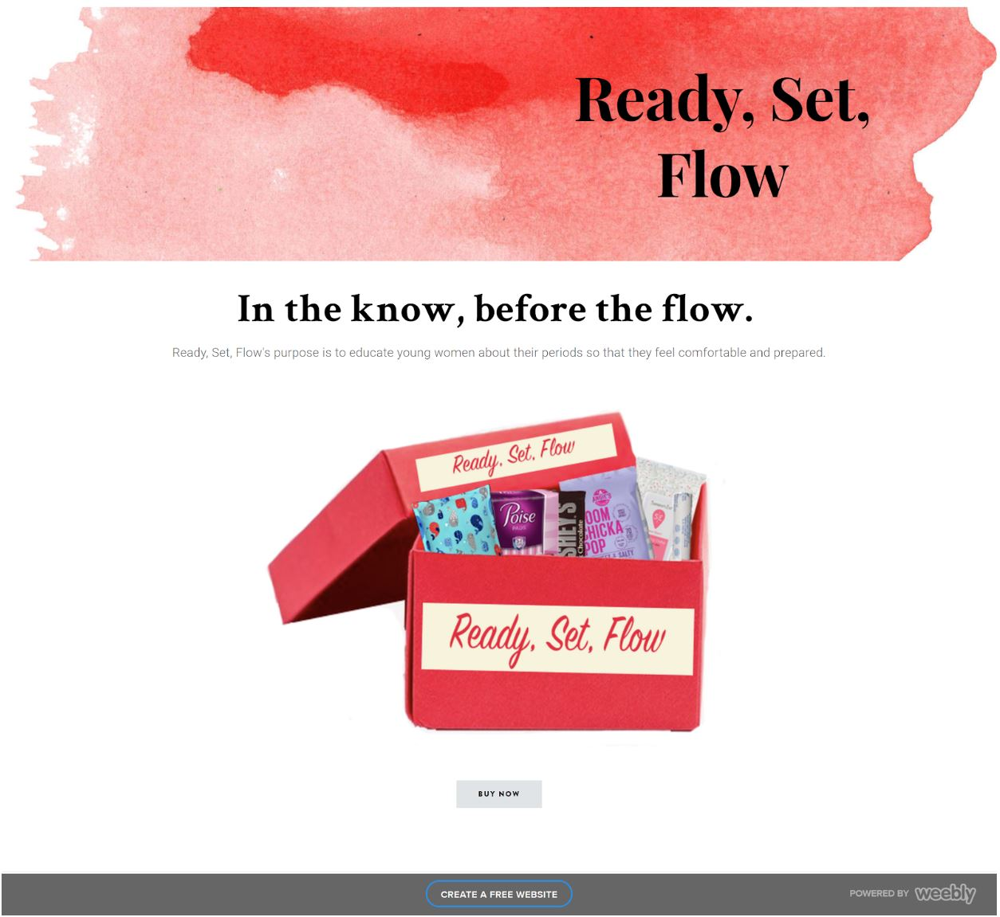
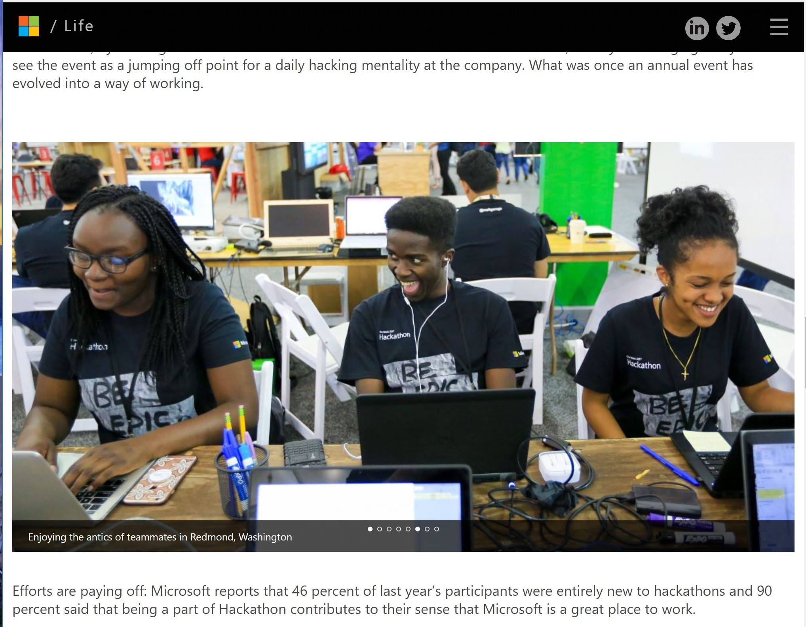

Branding the town of Nafplio, Greece
About
About
As students from the University of Washington, we traveled to Greece on a summer-long study abroad program that focuses on social justice. Shortly after arriving to Nafplio, we started a project hoping to brand the city in a way that would attract more tourists. Our ultimate goal was to draw in as many people as possible while staying true to the program's focus on social justice in Greece. I took on the role of project manager by making sure that everyone worked cohesivley and had deadlines to meet. I also lead & put together the design of the website we created, and that can be found in the link below.
Click here to view the website we created!
We also put together a portfolio with all of the merchandise, and branding tools that we created to compliment our brand. The portfolio also includes more of the work that we did in Nafplio, such as various social contribution projects. Click to see a pdf of our portfolio.

Ready, Set, Flow
Click here to view the test website we created!
About
Click here to view the test website we created!
About
This project was a part of the Info(Informatics) 200 course at UW Seattle. We found a problem to address, came up with a solution for it, and went through the design process in a matter of 10 weeks.
"As a group, we decided to focus our knowledge on menstrual education. We worked on making the talk of the flow, flow a little bit easier. Many young women around the world have little to no education about their menstrual cycle before it arrives. We have a solution to help young women start their path to womanhood. Having a period shouldn’t be treated as an inconvenience, and learning about it shouldn’t be either."
 Microsoft Hackathon 2017 -- Fashion.AI
About
About
This project was a part of the Hackathon that Microsoft puts on every Summer as a part of One Week. Our product was an app that would help those with vision impairments get dressed in the morning by identifying different articles of clothing by type, pattern, color, and other properties, and relaying the information to them by speech. Now I don't want to give away too much, but my coworker, another intern, and myself, were responisble for finding images to help the machines that were identifying the items do their job better. All in all, the highlight of One week was not the honorable mention we received from Satya Nadella (although that was pretty cool), but the fact that we had created something that would help make the lives of those in the blind community a little easier.
